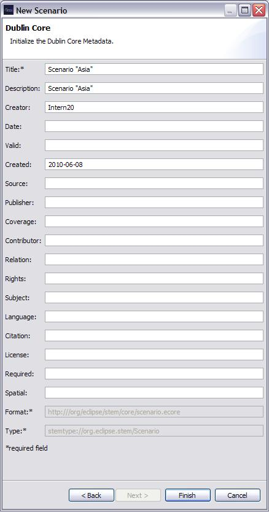

The New Scenario Wizard is used to create and define the properties of a new Scenario. A name must be provided for the scenario, and the Solver can be changed using a drop-down menu under "Pick a Solver".
If you pick the RungeKuttaSolver, you also have the option of specifying a Relative Tolerance for the numerical integrator. The smaller the number the more precise the results, but simulations will also take longer to run.
Scenarios contain a model, one or more infectors/inoculators as well as a sequencer.
